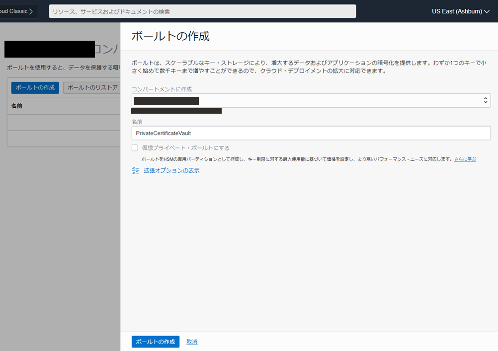
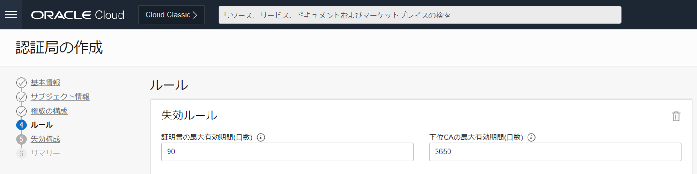
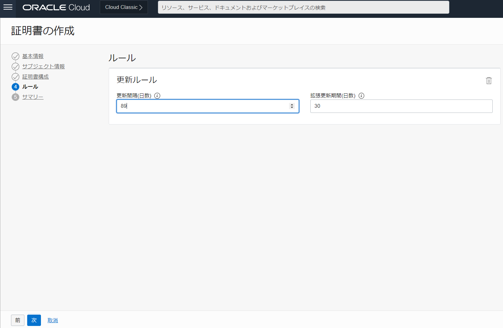
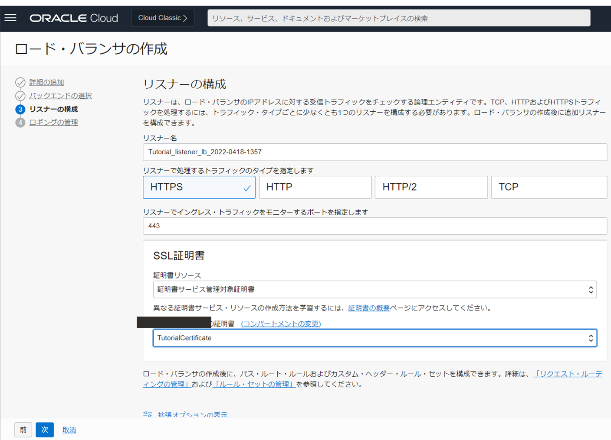
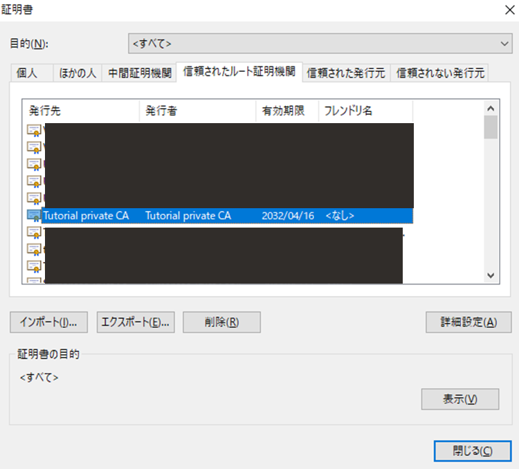

チュートリアル一覧に戻る : Oracle Cloud Infrastructure チュートリアル
OCIの証明書サービスではプライベート認証局（CA）を立てて証明書を簡単に管理することができます。またVaultサービスと組み合わせることで証明書の更新に必要な秘密鍵の管理も手軽にできます。
今回のチュートリアルでは認証局を立てて証明書を発行をします。
所要時間 : 約30分
前提条件 :
- 管理者権限を持つユーザーであること。
- 空のオブジェクトストレージを作成していること。
- (任意) ロードバランサーでWebサーバーを負荷分散する - Oracle Cloud Infrastructureアドバンスド が完了していること。
注意 : チュートリアル内の画面ショットについては Oracle Cloud Infrastructure の現在のコンソール画面と異なっている場合があります
1. 認証局と証明書とは？
概要
- 認証局について
公開鍵とその所有者を証明するための「電子証明書」を発行する機関です。認証局も信頼できる認証局であることを証明するために、より上位の認証局によって認証され、最上位の認証局をルート認証局(ルートCA)と呼びます。また、認証局にはプライベート認証局とパブリック認証局の二種類があり、OCIの証明書サービスではプライベート認証局を作成することができます。 - 証明書について
鍵の所有者を証明する証です。サーバー証明書、クライアント証明書、ルート証明書などがあります。証明書はTLS/SSL通信にて、相手が正当な所有者であることを確認する際や、通信を暗号化する際に利用されます。この相手が正当な通信相手であることを確認する手段として公開鍵認証基盤(PKI)があります。
以下に今回作成する証明書サービスです。

2. 事前準備
証明書サービスを利用する際は、ユーザーが証明書サービスを扱う権限に加えて、証明書サービス自体がVaultサービスやオブジェクトストレージを利用する権限が必要になります。ここでは証明書サービスを動的グループに属させ、その動的グループに権限を付与していきます。
動的グループとポリシーの作成
- コンソール画面→[アイデンティティとセキュリティ]→[動的グループ]→動的グループの作成
- 動的グループの作成
- 名前：任意(例：CertificateAuthority-DG など)
- 説明：任意
- 一致ルール：下で定義したいずれかのルールに一致 or 下で定義したすべてのルールに一致 ：どちらでも可
- 一致ルール ： resource.type =’certificateauthority’ 上記設定により、すべての認証局をこの動的グループのメンバとして指定したことになります。対象を絞り込みたい場合は、一致ルールで コンパートメント の OCID を指定することも可能です。
- ポリシーの作成
コンソール画面 → [アイデンティティとセキュリティ] → [ポリシー]
- 名前 ：任意 (例：CertificateAuthority-Policy など)
- 説明 ：任意
- コンパートメント ：任意のコンパートメントを選択
- ポリシー・ビルダー ：「手動エディタの表示」を有効化し、下記テキストを設定
Allow dynamic-group 動的グループ名 to use keys in compartment コンパートメント名 Allow dynamic-group 動的グループ名 to manage objects in compartment コンパートメント名
これらの権限設定を忘れた場合、認証局の作成で 以下のようなエラーが発生します。
Vault への権限不足：
Authorization failed or requested resource not found: Key Id <OCID>
オブジェクト・ストレージへの権限不足：
Validation of the certificate revocation list (CRL) bucket failed.
Vaultの作成
- コンソール画面→[アイデンティティとセキュリティ]→[ボールト]
- ボールトの作成

- コンパートメントに作成 ：任意のコンパートメントを選択
- 名前 ：任意(例：PrivateCertificateVault)
- 仮想プライベート・ボールトにする ： チェック無
Note
「チェック有」にした場合、「仮想プライベート・ボールト」は、１時間あたり「¥446.88」のサービスのため、課金が発生 します。後から変更することも出来ません。 また、Vaultサービスは作成後、すぐに削除することが出来ず、最短でも7日後の削除指定のみ可能なため、誤って作成すると最低でも「約￥75,264」の課金が発生するので、十分に注意して実施してください。
キーの作成
- コンソール画面→[アイデンティティとセキュリティ]→[ボールト]→[作成したボールトの詳細]→[キーの作成]
- 設定

- コンパートメントに作成 ：任意のコンパートメントを選択
- 保護モード ：[HSM] を選択
- 名前 ：任意(例：TutorialKey)
- キーのシェイプ: アルゴリズム ：[RSA] を選択
- キーのシェイプ: 長さ ：[2048 ビット] を選択
- 外部キーのインポート ：チェック無
保護モード [ソフトウェア] は証明書サービスでサポートされないため、[HSM] を選択します。ここで作成する HSMキーも有償サービスですが、 20個 までは 無償 となっています。
3.認証局の作成
認証局は作成後すぐに削除はできず、最短で 7日後から削除指定が可能です。誤って作成した場合、削除するまで時間がかかるため注意して作成してください。
-
コンソール画面→[アイデンティティとセキュリティ]→[認証局]
-
設定

■ 基本情報
- コンパートメント ：任意のコンパートメントを選択
- 認証局タイプ ：[ルート認証局] を選択
- 名前 ：任意(例：TutorialPrivateCA)
- 説明 ：任意の値を設定
■ サブジェクト情報

- 共通名 ：任意の値を設定 (=CN/CommonName に該当する項目です。証明書の発行者を意味し、証明書の Issuer などに表示されます。)
- 追加フィールドの項目は、認証局を作る上では必須項目ではありません。用途(証明したい内容)に応じて設定します。 単にドメインの証明 (DV) がしたい場合には 共通名だけを、組織の実在証明 (OV) をしたい場合には、以下の項目なども設定する、といった感じです。
- 国(=C) ：日本
- 州/省(=S) ：Tokyo
- 組織(=O)：Tutorial
- 編成単位(=OU)：security
■ 権威の構成

- 有効期間の開始日 ：デフォルトのまま (即時有効になる)
- 有効期間の終了日 ：デフォルトのまま(10年後のUTC0:00時)
(有効期間の開始日+1日～2037年12月31日の範囲で指定可能) - <コンパートメント名>のボールト ：作成したものを選択
- <コンパートメント名>のキー ：作成したものを選択
- 署名アルゴリズム ：[SHA256_WITH_RSA] を選択
署名アルゴリズムは、ボールトのキーシェイプによって選択肢が変わります。キーシェイプをRSAにしていた場合、[SHA256_WITH_RSA]、[SHA384_WITH_RSA]、[SHA512_WITH_RSA] から、ECDSA にしていた場合、[SHA256_WITH_ECDSA]、[SHA384_WITH_ECDSA]、[SHA512_WITH_ECDSA] から選択します。
SHAxxxの「xxx」は生成されるハッシュ値の桁数を意味しており、長いものはそれだけ安全性が高いと言えますが、一方で 計算に時間を要したり、実装のし易さに影響します。ご利用想定の環境や、性能・セキュリティ要件に合わせて選択してください。
■ ルール

- 証明書の最大有効期間(日数)：デフォルトのまま (90日後)
- 下位CAの最大有効期間(日数)：デフォルトのまま (3650日後)
証明書の最大有効期間はドキュメント上で「90日以内にすることを強くお勧めします」と触れられています。これは解読を防ぐだけでなく漏洩時のリスクや影響範囲の極小化のために更新が必要になります。
■ 失効構成

- 失効のスキップ ：無
- オブジェクトストレージバケット：事前に作成した空のオブジェクトストレージ
- オブジェクト名形式：任意
既に利用済みのオブジェクト・ストレージを指定した場合、「There is a conflict with the entity with <OCID>」というエラーが発生します。
「オブジェクト名形式」では、オブジェクト名に中括弧を含めて、サービスが発行元のCAバージョン番号を挿入できる場所を示すことができます。例えば、「ocica-{}.crl」などです。これにより、新しいCAバージョンを作成するたびに既存のCRLが上書きされるのを防ぐことができます。
以上で、「認証局」の作成は完了です。

4.証明書の作成
証明書についても、作成後すぐに削除はできず、最短で翌日から削除指定が可能 です。誤って作成した場合もすぐには消せないので、サービスリミットに注意して作成してください。
- コンソール画面→[アイデンティティとセキュリティ]→[認証局]
- 設定
■ 基本情報

- コンパートメント ：任意のコンパートメントを選択
- 証明書タイプ ：[内部CAによって発行済み] を選択
- 名前 ：任意の値を設定
- 説明 ：任意の値を設定
■ サブジェクト情報

-
共通名 ：任意の値を設定 (=CN/CommonNameに該当する項目です。証明対象の名称を意味します。主に FQDN やドメイン名を付けると思います。)
-
サブジェクトの代替名 ：(SANs に該当する項目です) リストボックスから [DNS名] を選択し、テキストボックスに任意のFQDNまたはドメイン名を指定します。
※ ここで指定した値を使って「6.(参考)ロードバランサに証明書サービスを紐づける」のロードバランサーにアクセスします。 -
追加フィールドの項目 ：任意
認証局を作る上では必須項目ではありません。こちらも 用途 (証明したい内容) に応じて設定します。 単に ドメインの証明 (DV) がしたい場合には 共通名だけを、組織の実在証明 (OV) をしたい場合には、以下の項目なども設定します。
国(=C) ：日本
州/省(=S) ：Tokyo
組織(=O)：skogkatter
編成単位(=OU)：security
■ 証明書構成

- 証明書プロファイル・タイプ ：[TLSサーバーまたはクライアント] を選択
- <コンパートメント名>の発行元認証局 ：作成したものを選択
- 有効期間の開始日 ：デフォルトのまま(即時有効になる)
- 有効期間の終了日 ：デフォルトの日付「-1日」を指定
有効期間の開始日+1日～2037年12月31日または証明書発行元の認証局で指定した証明書の最大有効期間未満のいずれか短い方の範囲で指定可能。 デフォルトは 90日後が指定されているが、その値では未満にならない為、「-1」を設定。 - キー・アルゴリズム ：[RSA2048] を選択
- 証明書プロファイル・タイプは、[TLSサーバーまたはクライアント]、[TLSサーバー]、[TLSクライアント]、[TLSコード署名]から選択できます。今回はサーバー証明書として利用する予定で、[TLSサーバーまたはクライアント] を選択しています。用途に合わせて選択してください。
■ ルール 
- 更新間隔(日数) ：デフォルトのまま (89日後)
- 拡張更新期間(日数) ：デフォルトのまま (30日後)
note
認証局の作成時に指定した「証明書の最大有効期間」、証明書構成で指定した「有効期間の終了日」、および本項目での設定値が噛み合わない場合、「The validity period 7793377294 exceeds the maximum validity period allowed 7776000000.」というエラーが出ます。エラーが発生した場合には、それらの日数を見直しましょう。

以上で証明書の作成は終了です。
5.(参考) 証明書の更新と失効
証明書の有効期限が切れてしまうとWebサーバーの場合、サイトが閲覧できなくなってしまいます。このようなことを防ぐために証明書の更新が必要になります。また、運用を停止したい場合は証明書を失効する必要があります。 これらをコンソール画面で行うことができます。
証明書の更新
証明書を更新すると、新しい証明書バージョンが作成されます。外部で管理する秘密キーを使用してインポートされた証明書および証明書は更新できません。外部で管理する秘密キーを含むインポートされた証明書の場合、証明書サービスは証明書を自動的に更新することはできませんが、発行元のサードパーティCAによって署名された新しいPEMで証明書を更新できます。
証明書の詳細から[証明書の更新]を押して、有効期限を設定するだけで証明書を更新できます。保留中にチェックを入れることで、新しい証明書だけを作成して更新は行わない設定もできます。

例えばWebサーバーを負荷分散させるためのロードバランサのリスナーに証明書サービスを設定することもでき、コンソール画面で更新するとロードバランサにあるサーバー証明書も更新されます。
証明書の失効
証明書の詳細から[バージョンの取り消し]を押して失効理由を入力するだけで証明書を失効することができます。その際、失効した証明書はオブジェクトストレージに保存されます。

以上で、この章の作業は終了です。
6.(参考) ロードバランサに証明書サービスを紐づける
この証明書サービスをロードバランサなどのサービスに紐づけることによって、証明書の更新などを行った際に自動的に更新できます。

リスナーの構成
ロードバランサの作成時、もしくはロードバランサ作成後にリスナーの構成をします。
- トラフィックタイプ ：HTTPS
- ポート番号 ：443
- 証明書リソース ：証明書サービス管理対象証明書
- 証明書 ：作成した証明書


セキュリティリストの構成
忘れずにセキュリティリストで443ポート宛てのTCPを許可するイングレスルールを設定します。
ルート証明書のインポート
ロードバランサから送られてきたサーバー証明書が本当に正しい証明書なのかを検証するために、クライアント側でルート証明書をあらかじめ用意しておく必要があります。
- [認証局]→[認証局の詳細]→[バージョン]→トリコロン→[コンテンツの表示]

- 証明書PEMダウンロード
- お使いのブラウザの設定で、ダウンロードしたルート証明書をインポートします。
 (chromeの場合、証明書の拡張子を「.pem」→「.crt」に変換する必要があり、opensslコマンドで変換します。)
openssl x509 -outform der -in certificate.pem -out certificate.crt
Note
証明書とドメイン名が結び付けられているため、ロードバランサのパブリックIPアドレス直打ちでアクセスしようとするとSSLが有効化されません。そのため、DNSでサーバーのFQDNとパブリックIPのAレコードを追加するかクライアント側のhostsファイルを編集して、ドメイン名でアクセスしましょう。
SSL_ERROR_BAD_CERT_DOMAIN が出た場合、接続時のサイトの FQDN と 証明書のコモンネーム (またはSANs) が一致していない可能性があります。証明書の作成時に指定した「共通名」を確認し、hosts に反映し直しましょう。
ERR_SSL_VERSION_OR_CIPHER_MISMATCH が出た場合、暗号化方式が古い、または、ブラウザが対応していないことが 一つの可能性として挙げられます。暗号アルゴリズムを見直してみましょう。


以上で、この章の作業は終了です。
チュートリアル一覧に戻る : Oracle Cloud Infrastructure チュートリアル